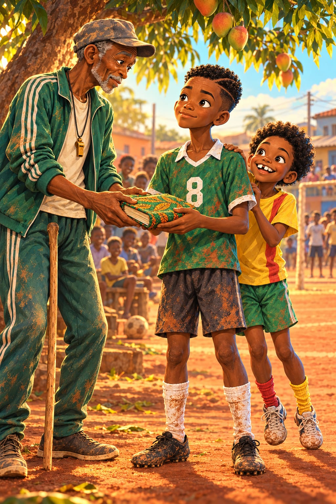

Le carnet de Tonton Fokou

« BONAMOUSSADI ! EST-CE QUE VOUS ÊTES LÀ ? »
Krrrrr ! Le haut-parleur grésille. Le père de Radio a apporté un vrai micro.
« OUAIIIS ! » répond le quartier.
Samedi 3 janvier, demi-finale du tournoi des quartiers. Il y a du monde partout, sur le mur de Monsieur Bilé, sur les toits, jusque dans le manguier. Une fanfare d'enfants tape sur des casseroles. Bing ! Bong !
« LION-CEAUX ! LION-CEAUX ! »
« Beignets gratuits pour celui qui marque ! » crie Madame Ekotto sous son parasol rouge.
Dans sa poche, Kaydoudou a une feuille pliée en huit, avec un mot écrit si fort que le crayon a cassé : « utile ».
Aujourd'hui, j'ose, se dit-il. Sinon, je n'oserai jamais.
Après cette demi-finale, il y a la finale. Et après la finale, l'avion.
« À ma gauche, les Requins de Bépanda ! annonce le micro. À ma droite, nos Lionceaux de Bonamoussadi ! »
Les Requins arrivent en chantant. Maillots bleus, aileron dessiné au feutre dans le dos. Devant, Bulldozer. Il a encore grandi pendant les vacances de Noël. Ou alors c'est la peur qui le fait grandir.
Il fait claquer ses dents. Clac !
« Ça sent le lait, par ici. »
« Les Lionceaux ? Chez nous, à Bépanda, on appelle ça des chatons. »
« Et chez nous, les requins, on les mange grillés, avec du plantain ! » répond Mireille.
BriBri serre les poings.
« Je vais lui faire un petit pont si grand qu'il va tomber dedans ! »
« Pas maintenant, dit Kaydoudou. Sur le terrain. »
Sous le manguier, BriBri sort le ballon de Mami.
« Ballon de Mami, aujourd'hui, tu nous regardes. D'accord ? »
Dix passes sans toucher le sol. Les enfants comptent avec eux.
« Huit ! Neuf ! DIX ! »
Poing contre poing. Main sur le cœur.
« Aujourd'hui, on garde rien, dit BriBri. Ni la caisse ni la bouche. »
« Ni la caisse ni la bouche », répète Kaydoudou.
Il le pense vraiment. Puis le match commence, et il oublie tout.
« Coup d'envoi ! Les Requins attaquent ! Long ballon vers Bulldozer ! Et tout le monde court derrière ! »
Kaydoudou récupère. Il lève les yeux. Les maillots bleus sont serrés en ligne, comme les dents d'un peigne.
Trop risqué.
Passe sur le côté.
Il récupère encore.
Trop risqué.
Passe en arrière.
« Ngassa donne sur le côté ! Encore sur le côté ! Très propre, mesdames et messieurs ! »
« Bien, Kaydoudou ! Propre ! » crie Madame Ekotto.
Sous le manguier, Tonton Fokou ne dit rien. Son silence est plus fort que la fanfare.
« 15e minute ! Corner pour Bépanda ! Bulldozer monte… il monte… il monte encore… »
Bam ! De la tête. Le ballon glisse entre les mains d'Ousmane comme une pierre dans l'eau.
0‑1.
« Et c'est le Bulldozer qui écrase tout ! Euh… Pardon. Hou ! Hou ! »
La fanfare se tait.
« C'est rien ! crie BriBri. On va revenir ! »
« Avec quoi ? répond Mireille. On n'a pas tiré une seule fois ! »
Ils s'assoient en rond à l'ombre du manguier. Personne ne parle. Radio, pour la première fois de sa vie, est en panne. Mireille arrache des brins d'herbe, un par un, très fort.
Tonton Fokou est debout, sur sa bonne jambe, les mains dans le dos. Il regarde chaque joueur. Puis Kaydoudou. Plus longtemps.
Et il ne dit rien.
Il attend que je parle, comprend Kaydoudou. Non. Pas moi. Je préfère rater cent passes devant tout le quartier.
Il ouvre la bouche. Rien ne sort. BriBri lui donne un petit coup de genou.
« Ni la caisse ni la bouche », chuchote-t-il.
Kaydoudou se lève. Ses jambes tremblent. Sa voix aussi, mince et cassée, comme une vieille porte.
« Je… j'ai vu un truc. »
« Il parle ! souffle Radio. Mesdames et messieurs, il parle ! »
Mireille en lâche son brin d'herbe.
« Les Requins ont peur de BriBri. Dès qu'il touche le ballon, ils sont trois sur lui. Même Bulldozer vient. Tout leur côté glisse vers la gauche. Comme une table qui penche. »
Il ramasse un bâton et dessine dans la poussière. Quand ses mains dessinent, elles tremblent moins.
« Alors on leur donne ce qu'ils veulent. On joue à gauche, vers BriBri. Ils viennent. Et quand ils sont tous là, il y a un trou au milieu de leur ligne. Je l'ai vu cinq fois. Cinq fois, et je n'ai rien fait. »
« Cinq fois ? dit Samuel. Et tu ne l'as pas dit ? »
« Je le dis maintenant. Cette fois, je passe dedans. Par le trou. BriBri, tu fais deux pas vers l'intérieur, dans leur dos. Et quand tu as le ballon, tu dribbles pour les attirer. Pas pour les battre. »
« Pour les attirer, répète BriBri. Comme le miel attire les mouches. »
« Mireille, tu restes de l'autre côté. Toute seule. Tu attends. Ils vont t'oublier. »
« Personne ne m'oublie, moi. Mais d'accord. Je serai un fantôme. Un fantôme très rapide. »
« Et moi ? » demande Radio.
« Toi, tu cours au milieu et tu parles très fort. Ils vont te regarder. »
« Ça, je sais faire ! »
Pour la première fois, tout le monde rit. Kaydoudou lève la main, l'index et le majeur tendus.
« Et si je fais ça, deux doigts, BriBri, tu me donnes le ballon et tu pars tout droit. Je te le rends dans le dos de Bulldozer. »
Les yeux de BriBri s'allument. Même Ousmane parle, ce qui n'arrive jamais.
« Et moi, je ferme la porte. »
Kaydoudou se rassoit, les oreilles en feu. Tonton Fokou s'éclaircit la gorge.
« Vous avez entendu votre capitaine. »
« Capitaine Ngassa ! » dit BriBri en faisant le salut militaire.
Capitaine ? Moi ?
Houou ! L'équipe se lève autour de lui comme un seul corps.
« Deuxième mi-temps ! Les Lionceaux jouent à gauche… encore à gauche… toujours à gauche ! Ils ont perdu leur boussole ou quoi ? »
Une fois. Deux fois. Trois fois. Des gens sifflent.
« Alors, les chatons ? lance Bulldozer. On a peur d'avancer ? »
À la quatrième fois, Kaydoudou voit la table pencher.
Trois maillots bleus autour de BriBri. Bulldozer qui arrive en courant. Et au milieu de leur ligne… un trou. Large comme une porte de garage.
BriBri rend le ballon et fait deux pas. Vers l'intérieur. Dans le dos des Requins.
Tout ralentit.
La poussière rouge flotte dans l'air. Le ballon tourne doucement devant le pied de Kaydoudou. Dans sa tête, des voix crient. Tu vas rater ! Contre-attaque ! Puis la voix de Papa passe devant les autres. Si le paquet se perd, on en renvoie un autre.
Il frappe.
Le ballon file au ras de la terre rouge, entre deux maillots bleus. Il traverse la ligne comme une aiguille traverse un tissu. Et il arrive pile dans les pieds de BriBri.
BriBri se retourne. Devant lui, deux défenseurs et le gardien. Avant, il les aurait dribblés pour le spectacle. Cette fois, il avance droit sur eux. Lentement. Il hoche la tête comme un lézard : le crochet du margouillat, en promesse.
Les deux défenseurs sortent ensemble. Tous les deux.
Et sur la droite, toute seule, oubliée, la Gazelle arrive.
BriBri glisse le ballon entre eux, sans même la regarder. Mireille le pose dans le coin, comme on pose une assiette sur une table.
1‑1.
« BUT ! BUT DE LA GAZELLE ! Mesdames et messieurs, vous avez vu la passe du numéro 8 ? Ce n'est pas une passe, c'est une flèche ! »
La fanfare explose. Madame Ekotto jette son carton en l'air.
« Mireille ! Viens chercher tes beignets ! »
Mais Mireille court donner une grande tape dans le dos de Kaydoudou.
« Tu vois ? Quand tu parles, ça marche ! »
Bulldozer, lui, ne fait plus claquer ses dents.
« Ce n'était pas prévu, ça ! »
Sous le manguier, Tonton Fokou lève sa casquette.
« Voilà ! Le ballon voyage ! »
Un requin blessé devient méchant.
« Tir de Bulldozer ! Arrêt d'Ousmane ! Encore Bulldozer ! Ousmane s'envole… il s'envole… il atterrit dans le manguier ! »
Ousmane se relève avec des feuilles dans les cheveux. Pas un mot.
« Il reste deux minutes ! Ousmane relance vers Ngassa ! »
BriBri vient vers son frère sur la gauche, Bulldozer collé dans son dos.
Les deux frères se regardent. Une demi-seconde.
Kaydoudou lève deux doigts.
« Ngassa lève deux doigts ! Qu'est-ce que ça veut dire ? Personne ne sait ! »
BriBri, lui, sait. Il donne le ballon et part tout droit, comme une flèche. Kaydoudou remet en une seule touche, par-dessus le pied tendu d'un Requin, dans le dos de Bulldozer. Là où BriBri arrive déjà.
« Bulldozer se retourne… TROP TARD ! »
Seul devant le gardien, BriBri attend qu'il plonge. Puis il pousse le ballon de l'autre côté. Doucement. Presque poliment.
2‑1.
« Les Lionceaux passent devant ! »
« BriBri ! Deux beignets ! crie Madame Ekotto. Non, trois ! »
BriBri court au coin, là où un bout de bambou sert de drapeau. Une main sur le ventre, l'autre au ciel, les hanches qui roulent comme une pirogue sur le fleuve. La danse de Roger Milla ! Et tout Bonamoussadi danse avec lui.
« Le une-deux du Njangi ! hurle BriBri en attrapant son frère par le cou. Deux doigts ! Ça s'appelle le une-deux du Njangi ! »
« Le une-deux du quoi ? » demande Radio.
« Du NJANGI ! Chacun verse sa part, et à la fin, on touche la caisse ! »
Radio remet sa main en micro.
« Mesdames et messieurs, retenez bien ce nom ! Le une-deux du Njangi ! »
Houou ! Tonton Fokou siffle la fin. Le hibou enrhumé a l'air de rire.
Bulldozer s'arrête devant Kaydoudou et lui tend la main.
« Pas mal, les chatons. »
« Lionceaux », dit Kaydoudou. Et il serre la main.
Plus tard, quand la foule est partie, Tonton Fokou appelle depuis le manguier.
« Capitaine ! Viens par ici. »
BriBri suit, évidemment.
Le soleil descend, et sa lumière dorée glisse à ras de terre. Tonton Fokou, casquette usée et sifflet au cou, se tient sur sa bonne jambe, l'autre un peu pliée. Il défait un paquet de papier journal, sans se presser. Puis il tend ce qu'il y a dedans, avec ses deux mains.
Un cahier. Épais. Couvert de pagne vert et orange, cousu tout autour à petits points.
Kaydoudou le prend tout doucement, avec émotion. Ses mains sont encore rouges de poussière, comme son maillot 8. Derrière lui, BriBri sautille sur la pointe des pieds pour voir par-dessus son épaule.
« Fais voir ! Il y a des calebasses sur le pagne ! Des vraies calebasses ! »
« C'est ma femme, Mama Odile, qui l'a habillé, dit Tonton Fokou. Elle dit que les choses importantes doivent avoir de beaux vêtements. »
« Mais… pourquoi moi ? » demande Kaydoudou.
« Parce que je sais que tu écris. Sur des feuilles volantes. Dans ton cahier de maths. »
Kaydoudou devient tout rouge et se tourne vers BriBri, qui regarde soudain le manguier avec un très, très grand intérêt.
« Ton frère l'a dit à Madame Ekotto, explique Tonton Fokou. Et Madame Ekotto l'a dit au marché entier. »
Il pose la main sur l'épaule de Kaydoudou.
« Moi aussi, j'étais un 8, autrefois. Je voyais tout, et je ne disais rien. Personne ne m'a jamais donné de cahier. »
Il tapote le pagne.
« Écris ce que le ballon t'apprend. Partout où tu iras. »
« Et si le ballon ne m'apprend rien ? »
« Le ballon parle tout le temps, mon fils. Il faut juste écouter. »
Kaydoudou serre le carnet contre lui.
« Merci, Tonton. »
Cette fois, sa voix ne tremble pas.
Le soir, Kaydoudou recopie ses six premières leçons dans le carnet. Une par page. Les schémas à la règle.
« Je peux dessiner un requin ? » demande BriBri.
« Dans la marge. Tout petit. »
BriBri dessine un requin minuscule, avec des dents énormes. Kaydoudou ouvre la septième page, écrit la date et souligne deux fois le titre.
« Range ta règle, l'écrivain, dit Maman en passant. On mange bientôt. »
Quand il relève la tête, Papa est à la porte, une enveloppe à la main.
« Le comité des quartiers a appelé. La finale contre les Panthères de Deïdo, c'est samedi prochain. »
« Samedi ! crie BriBri. On va les croquer ! »
Papa ne sourit pas tout à fait. Il ouvre l'enveloppe. Dedans, il y a quatre billets d'avion. Douala, Paris, Washington.
« Et le départ, c'est le lundi suivant. »